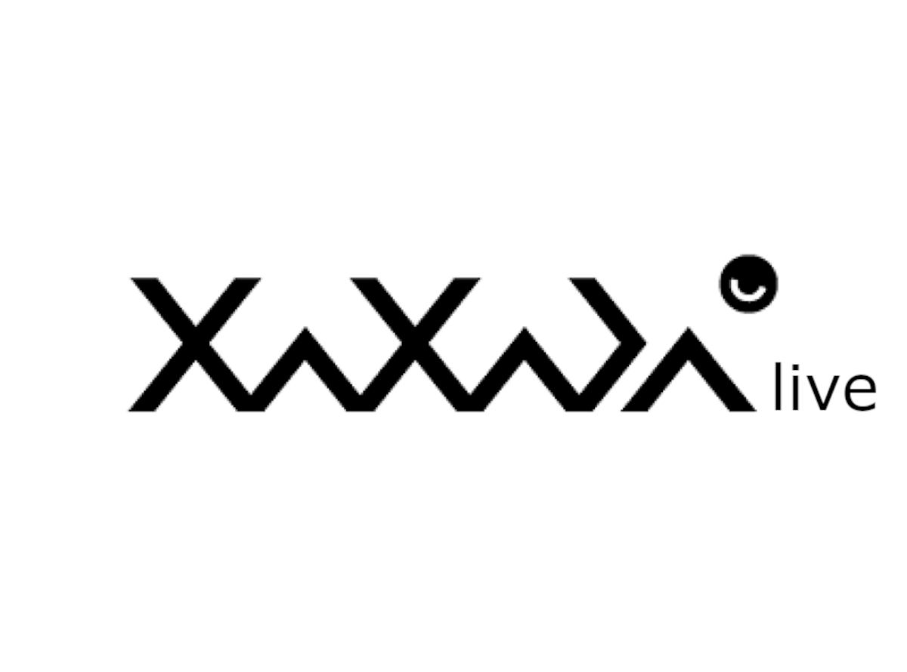
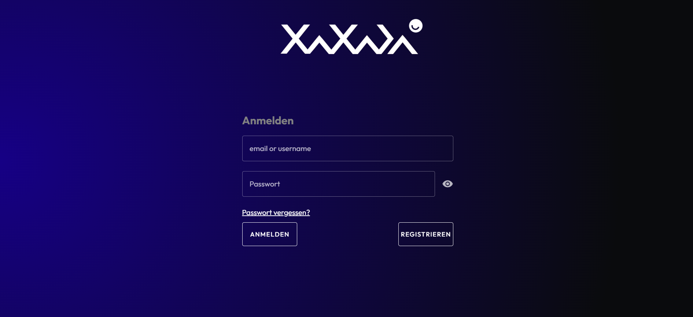
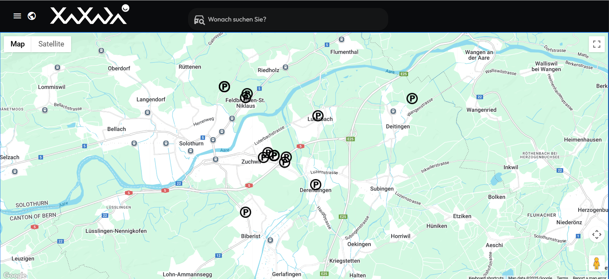
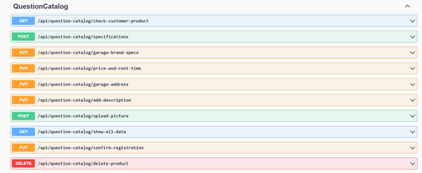

C#.NET und Vue.js

xaxada live ist das Projekt bei dem ich die Führung des Entwicklungs-Teams geteilt habe. Eine live-Demo finden Sie auf go.xaxada.live.
Die Idee hinter xaxada live ist die digitale Vermittlung von Immobilien, insbesondere Parkplätzen und Garagen. Die Plattform fungiert dabei als Schnittstelle zwischen Vermietern und Mietern und ermöglicht eine intelligente Steuerung von Zugangs- und Steuerelementen. Xaxada live basiert auf dem Smart-Home-Konzept von xaxada professional und nutzt dessen Funktionen zur automatisierten Steuerung von Türen, Toren, Beleuchtung und weiteren Komponenten. Die Steuerbefehle werden über das MQTT-Protokoll übertragen, um z.B. das Öffnen von Garagen zuverlässig und sicher auszulösen.

xaxada live wurde im Jahr 2023 ins Leben gerufen - und ich hatte das Glück, von Anfang an dabei zu sein. Ich habe viel Herzblut und Schweiss in dieses Projekt gesteckt und dabei wertvolle Erfahrungen im Umgang mit IT-Projekten gesammelt. Eine der wichtigsten Lektionen war, dass die Einhaltung von Deadlines manchmal wichtiger ist als eine perfekte Dokumentation - besonders, wenn kurz vor Projektabschluss noch Änderungen vorgenommen werden müssen. Ich habe gelernt, wie entscheidend eine gute Zusammenarbeit im Entwicklungsteam ist, um gemeinsame Ziele zu erreichen - auch wenn das bedeutet, zahlreiche Merge-Konflikte zu lösen. Nach unzähligen behobenen Bugs und vielen intensiven Arbeitsstunden konnten wir schliesslich stolz xaxada live einführen. Weil rechtliche Fragen geklärt werden müssen, befindet sich xaxada live aktuell noch im Test-Modus.

Im Rahmen dieses Projekts habe ich praktische Erfahrungen im Umgang mit verschiedenen APIs gesammelt. Dazu zählen unter anderem die Post-Adressverifizierungs-API zur Validierung von Garagenstandorten sowie die Google Maps API zur genauen Standortbestimmung und visuellen Darstellung der Garage und des Mieters - wie auf dem oberen Bild zu sehen. Das Frontend wurde mit Vue.js entwickelt, während die serverseitige REST-API mit C#.NET umgesetzt wurde. Der unten dargestellte Screenshot aus Swagger zeigt verschiedene Endpunkte, darunter z.B. die Überprüfung der räumlichen Nähe eines Mieters zur Garage als Voraussetzung für Steuerbefehle sowie die Adressverifikations-Endpunkte.

Der gesamte Code wurde über unseren internen GitLab-Server versioniert. Die Zusammenarbeit in einem Entwicklungsteam kann herausfordernder sein, als man anfangs denkt - und so wurde mein Git-Wissen ordentlich auf die Probe gestellt. Dabei konnte ich viel lernen: nicht nur, wie man sauber merged, sondern auch, wie man wenige Tage vor der Deadline noch ein erfolgreiches Rebase durchführt.